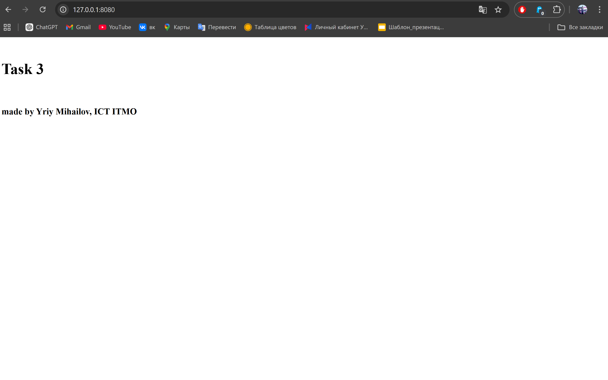
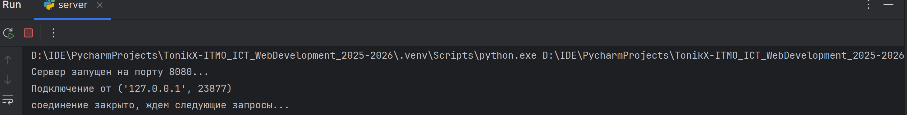

Задача 3
Цель
Реализовать серверную часть приложения, которая обрабатывает HTTP-запросы.
Клиент подключается к серверу и получает в ответ HTTP-сообщение, содержащее HTML-страницу, загруженную сервером из файла index.html.
Выполнение
В этой задаче нужно было построить простейший веб-сервер на основе сокетов.
Я использовал протокол TCP, так как именно он применяется в HTTP. На стороне сервера я создал сокет через метод socket(), затем привязал его к адресу и порту (bind()) и перевёл в режим ожидания входящих соединений (listen()).
Когда клиент подключается (accept()), сервер получает HTTP-запрос и открывает файл index.html, находящийся в той же папке, что и сам скрипт. Содержимое файла читается и формируется в ответ: заголовки HTTP/1.1 200 OK, Content-Type, Content-Length, а затем идёт сам HTML-код. Этот ответ сервер отправляет клиенту методом sendall().
Так как в задаче было указание сделать именно серверную часть, в качестве клиента я использовал браузер. Если написать 127.0.0.1:8080 (адрес сервера), то он как раз отправит GET запрос на него и отобразит html файл
Таким образом, удалось реализовать минимальный аналог веб-сервера, который умеет отдавать HTML-страницу.
Сервер
import socket
server_socket = socket.socket(socket.AF_INET, socket.SOCK_STREAM)
server_socket.bind(('localhost', 8080))
server_socket.listen(1)
print("Сервер запущен на порту 8080...")
while True:
client_connection, client_address = server_socket.accept()
print(f'Подключение от {client_address}')
with open("index.html", "r") as f:
html_content = f.read()
response = (
"HTTP/1.1 200 OK\r\n"
"Content-Type: text/html; charset=utf-8\r\n"
f"Content-Length: {len(html_content)}\r\n"
"\r\n"
f"{html_content}"
)
client_connection.sendall(response.encode())
client_connection.close()
print("соединение закрыто, ждем следующие запросы...")
Результат
Приведен скриншот страницы, которую отдает сервер браузеру по адресу 127.0.0.1:8080:

Сервер просто информирует о подключениях в консоли:

Вывод
В результате удалось создать минимальный HTTP-сервер на TCP сокетах, который корректно отдаёт HTML-страницу по запросу клиента. Это демонстрирует базовые принципы работы веб-серверов и взаимодействия по протоколу HTTP.